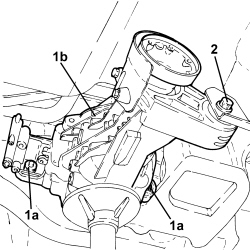

2720C10 DIFFERENCIAL UNIT - R.R.
- Path
- Procedures > 27 AXLE > 2720 REAR AXLE CASING -SEMISHAFT AND DIFFERENTIAL > 2720C REAR DIFFERENTIAL UNIT > 2720C10 DIFFERENCIAL UNIT - R.R.
- Kind
- repair procedure (removal / refitting; the operation number is the code)
- Applies to
- engines: 3.2 JTS; all production periods
- Interactive page
- https://sloeber94.github.io/elrnDB/alfa/159/en/#/939005311
Applies to: engines: 3.2 JTS; all production periods
 Removing
Removing
 Refitting
RefittingOp. 4450B13 REAR WHEELS (TWO) - R.R
Op. 2720D10 SEMISHAFT WITH LEFT OR RIGHT JOINT (ONE) - R.R.
1. Unscrew the propeller shaft rear mount bolts to the body and recover any alignment spacers.
2. Mark the position of the constant velocity joint with the RDA flange, unscrew the bolts securing the propeller shaft to the RDA and move aside, securing it to the body.

Applies to: engines: 3.2 JTS; all production periods
- Position a hydraulic jack fitted with a suitable tool and support the rear differential.
1. Undo the bolts (1a) securing the rear differential (1b) to the suspension crossmember and remove it.
2. Undo the bolt securing the rear differential (1b) to the crossmember reinforcement.
- Slowly lower the hydraulic jack to remove the rear differential.

Applies to: engines: 3.2 JTS; all production periods
Refitting
Removing- Place the rear differential back in its housing using the hydraulic jack.
- Tighten the bolt securing the rear differential to the crossmember reinforcement.
Component | Fastening | dia | Value (daNm) | Validity |
|---|---|---|---|---|
Rear differential - bracket side | Bolt | M12 | 9.9 ÷ 12.1 | 3.2 JTS |
- Tighten the bolts securing the rear differential to the suspension crossmember.
Component | Fastening | dia | Value (daNm) | Validity |
|---|---|---|---|---|
Rear differential - suspension crossmember side | Bolt | M12 | 9.9 ÷ 12.1 | 3.2 JTS |
- Remove the hydraulic jack and tool used for supporting the rear differential.
- Connect the propeller shaft to the RdA, aligning the reference notches made between the constant velocity joint and the RDA flange on removal.
- Tighten the bolts securing the rear constant velocity joint to the RDA, interposing half-moon washers.
Component | Fastening | dia | Value (daNm) | Validity |
|---|---|---|---|---|
Propeller shaft - rear differential side | Bolt | M10 | 5.6 ÷ 6.8 | 3.2 JTS |
- Tighten the bolts in a cross sequence.
- Position the rear propeller shaft mount in its seat, interposing any spacers taken out on removal.
- Tighten the bolts securing the propeller shaft rear mount to the bodyshell to the specified torque.
Component | Fastening | dia | Value (daNm) | Validity |
|---|---|---|---|---|
Bodyshell side propeller shaft rear support | Bolt | M8 | 2.2 ÷ 2.6 | 3.2 JTS |
Topics linked from this page (2)
Topics that link to this page (8)
- 1040A10 FUEL TANK - R + R AND DECANT FUEL
- 1040A14 FUEL TANK - R + R FOR REPLACEMENT
- 1040B30 FUEL SUPPLY PIPE (ONE) - R.R.
- 1040B52 FUEL RETURN PIPE (ONE) - R.R.
- 1080E61 FUEL VAPOUR PIPE FROM VAPOUR FILTER TO INTERMEDIATE COUPLING - R.R.
- 1080E43 PIPE FROM FUEL TANK TO ACTIVE CHARCOAL FILTER - R.R.
- 3340B67 RIGID PIPE FROM RIGHT REAR BRAKE CONNECTOR - R.R.
- 3340B69 RIGID PIPE FROM LEFT RER BRAKE CONNECTOR - R.R.